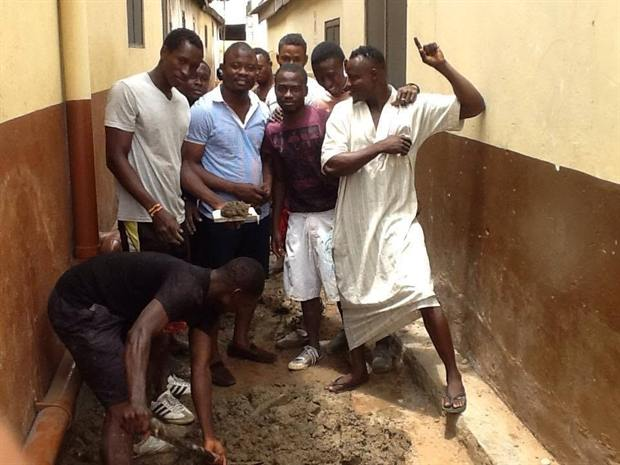

Infrastructure
A drainage network to end decades of flooding
After a needs assessment showed drainage — not resurfacing — was the constituency's most critical gap, a planned ten-kilometre inner-roads contract was converted into a major inner-community drainage project covering Maamobi, Kawukudi, Accra New Town, the Kwatso electoral area and surrounding neighbourhoods. A local contractor was deliberately chosen so the community stays engaged in the works.